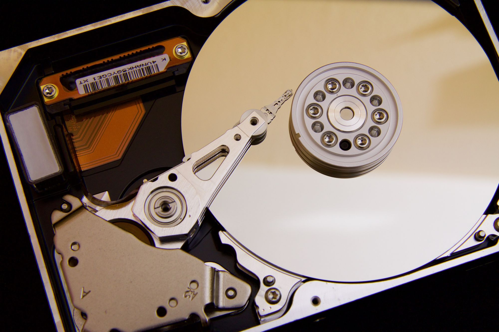

The Disk Is Slow
“The disk is slow” is one of those things that most programmers take for granted. Yes it is slow given the speed of other components. But rarely have programmers taken the time to dig into WHY the disk is slow and what that actually means. Yet, doing so can lead us down some interesting rabbit holes.

What is slow?
For a while now the speed of a hard-drive was measured in RPM or Revolutions Per Minute. This is an indication of how quickly the disk can spin. It is common now-days to see drives advertising 7,200 rpm, or 10,000 rpm or even 15,000 rpm. How fancy.
Now, the disk itself is split into a couple major components:
- The disks that data is stored on:
- The read/write head
These disks are where the data is actually stored, and when you see a number like “7,200 rpm” what you are seeing is how quickly these disks can spin. In a simplified manner, what happens when you “write something to disk”, is that the disk spins to an empty point, and the head beings to write. Likewise, when you “read” data from the disk, it spins to a designated point (the “start” of the data) and the head begins to “read” the data until it is done.
Let’s walk through a theoretical “disk”. Your “disk” can hold 8 units (00000000) of storage. We are going to perform a few actions on this disk.
You write 'a' twice - aa000000
You write 'b' 3 times - aabbb000
You delete the two 'a' - 00bbb000
You write 'c' 4 to,es - ccbbbcc0
See your drive is smart enough to know that, even though there isn’t enough “contiguous” space, there is still enough space scattered around on the drive to store your 4 units of ‘c’. What happens is that your drive will spin to a free location, and let you start writing. When you run out of contiguous space, it will spin to a new location. This results in your data actually spread out all over your drive instead of next to each other. This is a good thing, of course. It means that you can use all the space on your drive without worrying about WHERE things are stored.
But, it also means that instead of the disk spinning just ONCE to get to the start of your data, it actually needs to spin twice.
As we grow our disk size from “8 units” to hundreds of gigabytes as most modern drives today have, we run into a problem - there is no guarantee that the data we need will be next to each other. In actuality, there is a high probability that we will need to keep jumping about on the disk to be able to read ALL the data we want. Our data ends up “fragmented”.
Data Fragmentation
The result of all this fragmentation, is that things just get slower over time. Unfortunately, the eventual degradation of data storage efficiencies is never attributed to the hard-drive because users don’t actually USE the hard-drive directly - they go through the OS which is supposed to manage these things. As a result, the eventual experience of degrading of performance is chalked up to “my Windows is slow”. Operating systems combatted this eventual degradation by shipping with a defragmenter, which does exactly what you’d expect. It takes all these scattered fragments from around your drive, and puts them next to each other. This reduces the overall amount of seeks necessary to retrieve necessary information, thereby making things speedier.
But that’s an expensive (resource wise) thing to do. In order to defragment a system, the program needs to:
- find an application that has its data fragmented
- copy the data between the fragmented data to memory or some other free space on the drive
- move the data closer together.
- repeat
Lets go back to our previous scenario, and see how defragmentation could work:
Initial State: ccbbbcc0
Step 1: cc0bbccb
Step 2: cccbbc0b
Step 3: ccc0bcbb
Step 4: ccccb0bb
Step 5: cccc0bbb
Obviously this is not optimized in any way, so there’s plenty we could do to speed this up. But this is essentially what your drive is doing. It’s like putting a deck of cards back in order after you’ve been shuffling them. Sure it’s possible, but it just takes some time.
A much better idea, would be to try and optimize STORING this data in such a way that would reduce fragmentation. That is, maybe we keep data that is related next to each other on the drive when we WRITE the data the first time. That way things don’t get as fragmented as quickly.
Blocks and Pages
The first step in ensuring data is kept close together is the idea of “blocks”. Basically the filesystem that actually interacts with the hard-drive will define a “block-size”. The block size is basically a measure of how much data will fix in a block, and the filesystem reads/writes in blocks instead of individual bytes. Think of it this way: If your hard-drive was a piece of lined paper, we were originally writing things down one word per line. With blocks, we basically said “well, we’ll just write until we reach the horizontal end of this line”. So now instead of one word per line, we have a few words per line. Perhaps, we could say, we have have one sentence per line.
Using our previous 8 unit drive example, we could sub-divide that into blocks of 2 units, making it look like this:
Drive State: [c,c][c,c][b,b][b,0]
Now when we want to read all the c values, we have two seeks instead of 1 per record. This is already a big improvement (we’ve reduced seeks by 50%), but we could probably reduce it even more. Since the filesystem has to expose a standard block size to all applications, systems that have to have a high amount of HDD I/O need an alternative. The easiest thing to do, is take the concept of a block containing records and create another abstraction: a page containing blocks.
At its “lowest” level, a relational database deals with “pages”. Pages are really just collections of the data that you are storing. Relational databases (non-relational databases might as well, but I haven’t really dug into the internals of a lot of them) utilize this concept of a “page” to further decrease IO latency with the disk. Rather than dealing with the storage of individual records or information, it groups records together into a “page” and uses that. It will read/write a whole page. This allows them to capitalize on the assumption that when you are reading/writing data the data you are accessing is probably next to other data that you also require.
They even go so far as to let you customize this via “clustered keys”. A clustered key is just a mechanism to allow you, the database administrator, to define HOW the database orders the data within pages. As the administrator, you know the data you are trying to store, and the primary ways that it might be accessed. Databases give you the ability to say “well, group all these records together on the disk by the values in this column”. This creates pages that are grouped around a particular value (a userID for example), so that all records with that same value are near each other.
Think of a database where you want to associate a list of items with a user. You have two tabes, users and items.
+-------+ +---------+
| users | | items |
+-------+ +---------+
| id | | id |
| name | | user_id |
+-------+ | name |
+---------+
It would make sense to create a clustered key around the userID in the items table. This allows us to keep all items that belong to a single user in the same page, or group of pages, on the disk. This way, when we try and retrieve the items for a user, the database management system can fetch all the pages related to this user, stick them in memory, operate on them, and then write them all.
Databases are very intricate systems, and I don’t want you leaving thinking there isn’t a whole lot more to this whole concept. This is a HUGE simplification of what the database is actually doing, but it should provide you with an understanding of why it is doing some of that at a storage level.
The problem with blocks
The block system, however, is not without its own problems. By using “blocks” we’ve introduced a bit of wasted space into our storage. Lets go back to our block example:
Drive State: [c,c][c,c][b,b][b,0]
That trailing 0 in block 4 will remain empty unless we add more b data. We will be unable to add any more c values but we’ll be able to add more b. In fact, your drive will appear full to you because at the operating system level, it has no idea about the intricacies of your data storage. It just knows that these blocks are in use. So your 8 unit drive, has suddenly become 7 units.
That kind of sucks, and is actually a fundamental problem with “blocks”. As long as you have data to write, blocks are great, but they will almost always result in the LAST block in a segment not being completely filled. This is natural of course, since whatever application is using that space generally doesn’t care to know (nor should it!) about the block size it needs to be using. The result of this is that the more “small files” you have on your drive, the more “slack space” you have on the drive - space that isn’t being used for anything, but is still seen as “used”.
So now we come to a decision, either we just leave that space empty and accept it as part of the operating costs, or we try and figure out how to utilize it. Engineers, (un)fortunately, are quite obsessed with performance. These “tails” (the last block) are inefficient, and could probably be removed with a bit of smart thinking. This results in two possible ways to resolve this problem.:
- We allow the filesystem to support variable block sizes
- We figure out how to use that tail block for something useful
The first way, variable block sizes, is something file systems like ZFS utilize in an attempt to have more efficient storage. Since you know the kind of data you will be using the drive for, ZFS will let you specify your block size. If you know you have a lot of small things that need to be stored, drop the block size, likewise, increase if you have large things. It even has some magic like block level compression to try and use those blocks to their fullest. It is a very simple idea - and as we know, the simple ideas are the hardest to implement!
The second way, is another simple solution to the problem. If we know we have a bunch of tail blocks that are half-filled.. why don’t we just combine them? That way we aren’t creating a new tail block, but are instead re-using another tail block. This would result in another seek to read/write this data, but it ensures that we are using this disk to its fullest capacity. File systems like BTRFS will combine multiple tail blocks. The reason this is so effective is because the average block size is actually some multiple of 512 bytes. If you think about it, a text file might be a couple bytes? In a traditional file system that’s 1 block per couple bytes. That’s a heck of a lot of things you can stuff into a single block at that rate!
Changing the game
As you can see, we’ve put a lot of work into reducing the seek time for hard-drives. They’ve been such a fundamental component of computing that it was a requirement. But, what if you could just ignore seeking entirely? What if there was a way to almost instantly seek? In computer science we refer to this as O(1). That is the size of the data we are looking through is irrelevant - we can access any section of the data as quickly as any other. Welcome to the world of solid state storage. Solid state storage utilizes electronics instead of mechanical instrumentation. That is, instead of a spinning disk and actuators for the read/write heads it used electrical circuits. By removing the mechanical parts, it eliminated the “seek” time of disks that we find so slow. The only problem was that it was expensive and hard to make ENOUGH storage this way. We could easily make HDDs that were several gigabytes, but were struggling to make solid state drives at megabytes. It just couldn’t keep up.
Until it could.
Now days solid state storage devices are relatively cheap and large enough for the average user. They a whole bunch of problems caused by mechanical components. They produce less heat, less vibrations, and they are a lot faster. In fact, for a lot of work-loads, it’s silly to rely on hard-drives when you can get so much better performance from solid state storage.
How interesting
It’s crazy to think of all that we’ve accomplished because of that little mechanical hard-drive. But what’s crazier is that we are only able to see this in retrospect. No one was able to see what the result of spinning disk drives would be. No would thought that we would invent so many different file systems to solve the problems. That we would make so many advancements in technology just to store MORE data on the drives. At the time, they were just better than tape. They were simply a step in the chain, that in retrospect, was pretty cool. Follow the conversation at HackerNews https://news.ycombinator.com/item?id=13091192